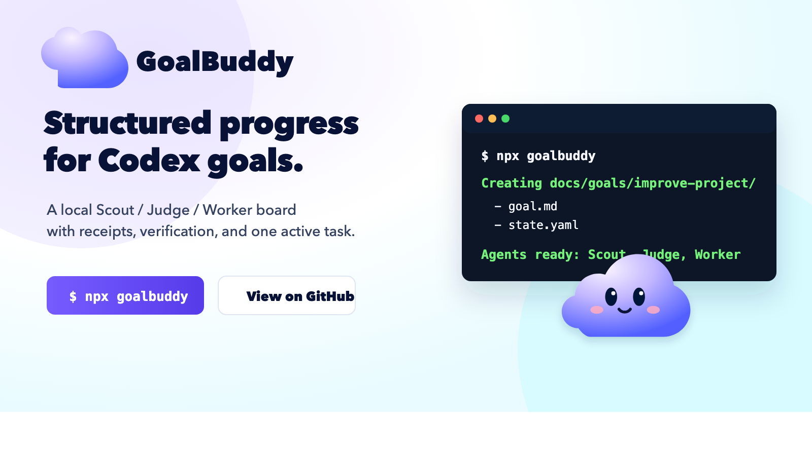
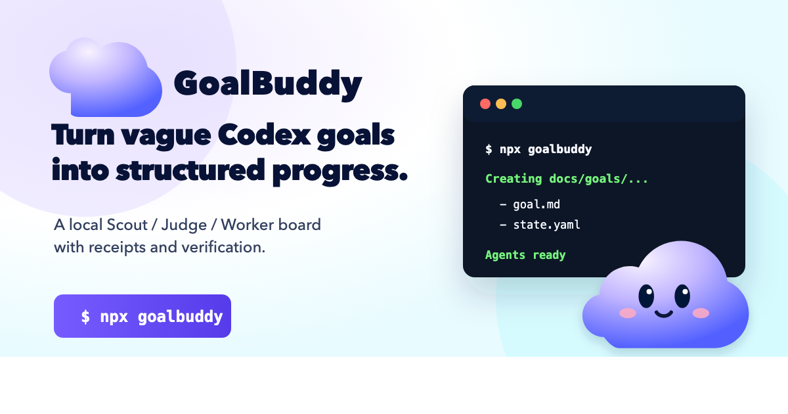

Scout
- Map repo structure
- List key workflows
- Identify risks
+1 more
Open-source Codex companion
GoalBuddy turns broad work into a living Scout, Judge, and Worker board with one active task, receipts, and verification.
$ npx goalbuddy
$ goalbuddy
Creating docs/goals/improve-project/
- goal.md
- state.yaml
- notes/
Installed agents: Scout, Judge, Worker
Next: /goal Follow docs/goals/improve-project/
goal.md continuously +1 more
+1 more
+1 more
Stay focused and reviewable with a single bounded next step.
Completed or blocked tasks leave proof: notes, findings, and commands to rerun.
Judge checks the work against acceptance criteria before the loop continues.
goal.md, state.yaml, and notes/ stay inside your repo.
Designed for long-running goals where context, receipts, and the next task matter.
Install locally
$ npx goalbuddy
MIT licensed, repo-friendly, and built to work with your existing process.
Start vague. Move through Scout, Judge, and Worker. Keep the proof close enough that future you can trust the path.
Capture the intent in a short charter instead of over-planning the whole project.
Repo shape, workflows, constraints, and likely risks become visible before changes start.
The next task is small enough to verify and meaningful enough to move the goal forward.
Implementation stays scoped to the active task, then leaves a receipt for review.
The board advances only after the outcome is checked against the charter.

Prepare receipt-aligned PR handoff text.

Mirror GoalBuddy boards into GitHub Projects.
Generate a concise map from repo files and conventions.
MIT licensed, runs locally, and keeps your goal state in files you can inspect.